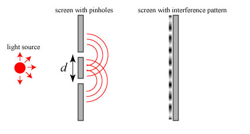
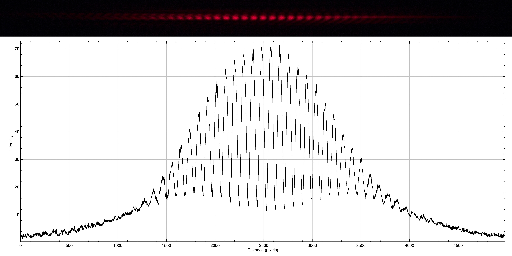

The Young experiment is one of the proofs of the wave character of light. It consist in a beam of monocromatic light hitting a screen on which two parallel, small and very close to each other slits, $A$ and $B$, are made. It was made the first time in 1802 by Thomas Young. The next figure show the experiment setup.
In this kind of experiment, what happens if one reduces the intensity up to the point that, on the average, there is just a single photon at a time in the path between the source and the screen? According to the corpuscolar theory of light, a photon that leaves the source and arrives on the screen, either passes through $A$ or $B$. If the photon passes through $A$, it is as $B$ were closed (and vice-versa) and it would not make sense the interference that one observe: the photon should be able to arrive at all the points that can be reached from the slit through which it passes. The observations show that even in this case you can see an interference figure: it seems like photons know that there are two slits.
To explain this phenomenon, we require the quantum mechanics. An important concept to introduce is the state of a system. Like in classical mechanics, a state of a particle at a given time is defined by position and velocity at that time. In quantum mechanics a state of a system is defined by all the informations nedeed to characterize and reproduce the experimental situation.
I tried to do this experiment using a red laser beam of a common laser pointer. I made two parallel slits as close as possible (about 1/20 of millimeter) on a paper sheet with a cutter. When I turned on the laser diode and pointed it on the slits, I saw the expected interference pattern on a screen behind the paper sheet. This is a photo of the interference figure with the intensity profile
